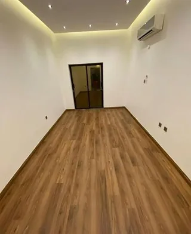

يدخل الزائر الشقة أو الفيلا، وفي أول دقيقة يكون عنده إحساس: إما "هذا البيت مرتاح له"، أو "هذا البيت يبي شغل". وهالإحساس يمشي معه طول المعاينة، ويأثر على أسئلته وعلى طريقة تفاوضه. ولهذا كثير من الملاك في الرياض يسألون: هل يستاهل أصرف على تنظيف المنزل قبل البيع بالرياض أو تنظيف المنزل قبل التأجير بالرياض قبل ما أعرضه؟
محتويات المقال 42 قسم
- تنظيف المنزل قبل البيع بالرياض: هل يرفع السعر فعلًا؟
- الانطباع الأول في المعاينة
- الفرق بين التنظيف قبل البيع وقبل التأجير
- أكثر الأماكن اللي تأثر في انطباع الزائر
- تنظيف المنزل قبل التأجير بالرياض: وش يبحث عنه المستأجر؟
- التنظيف مع الصيانة الخفيفة
- الأماكن المخفية: الخزائن والمكيفات والخزان
- التصوير والعرض
- كم يستحق أن تصرف؟
- التوقيت المناسب للتنظيف
- تنظيف المنزل قبل الايجار بالرياض: البيت المسكون مقابل البيت الفاضي
- الفلل والشقق والأدوار
- الشقق المفروشة
- الحوش والسطح والمداخل الخارجية
- التنظيف بين مستأجر ومستأجر
- لو أنت مو ساكن في الرياض
- قائمة سريعة قبل العرض
- الجدران والأبواب
- الإضاءة والضوء الطبيعي
- الأثاث في البيت المعروض
- الحيوانات الأليفة والتدخين
- غبار الرياض في فترة العرض
- وصف الإعلان والنظافة
- لو عندك أكثر من عقار
- سجل التنظيف والصيانة
- الأرضيات بأنواعها قبل العرض
- غرف الخدمات والمخزن
- لو البيت لسا مسكون وفيه أغراض كثيرة
- الممرات المشتركة في العمائر
- لو البيت جديد وما انسكن
- تفاصيل صغيرة في الحمامات
- النوافذ والشرفات
- تجهيز البيت لزيارة المختص أو المقيم
- الأسئلة اللي يسألها الزائر
- بعد كل معاينة
- أدوات تخليها في البيت فترة العرض
- أخطاء شائعة قبل العرض
- متى توفر الاستعانة بفريق متخصص وقتك؟
- يوم المعاينة نفسه
- بعد البيع أو التأجير: التسليم
- أسئلة شائعة عن تنظيف البيت قبل العرض
- الخاتمة
في هالمقال نجاوب بصراحة: وش اللي ممكن يغيره التنظيف، ووش اللي ما يغيره. ونشرح الفرق بين تجهيز البيت للبيع وتجهيزه للتأجير، وأكثر الأماكن اللي ينتبه لها الزائر، وكيف توازن بين اللي تصرفه والفايدة اللي ممكن تجيك. والهدف إنك تقرر بنفسك هل تنظيف المنزل قبل الايجار بالرياض يستاهل في حالتك.
💡 هالمقال عن التنظيف والتجهيز للعرض فقط، ومو استشارة عقارية أو قانونية. سعر البيع أو الإيجار يحدده السوق والموقع والمساحة والحالة العامة للعقار، والأفضل تستشير مختص عقاري في التسعير.
تنظيف المنزل قبل البيع بالرياض: هل يرفع السعر فعلًا؟
الجواب الصريح: التنظيف ما يغير قيمة العقار الأساسية. الشقة في حي معين بمساحة معينة لها نطاق سعر يحدده السوق، والتنظيف ما بيحولها لشقة في حي ثاني. لكن داخل هالنطاق، الانطباع ممكن يفرق.
البيت النظيف غالبًا يساعد على ثلاث أشياء: يقلل الأسباب اللي يتفاوض عليها المشتري أو المستأجر، لأن ما فيه أشياء تبان مهملة. ويسرع القرار، لأن الزائر ما يحتاج يتخيل كم بيصرف ويتعب عشان يجهز البيت. ويخلي البيت يظهر بأفضل حالته في الصور، فيجيب معاينات أكثر من البداية.
وفي المقابل، فيه أشياء ما يحلها التنظيف: عيب في البناء، أو تشققات، أو تسريب، أو موقع ما يناسب الزائر. ولهذا تنظيف المنزل قبل البيع بالرياض جزء من التجهيز، ومعه أشياء ثانية ما يحلها إلا الصيانة أو التسعير. ولما يكون العقار مناسب في السعر والموقع، تنظيف المنزل قبل التأجير بالرياض أو البيع يمشي أسهل لما يكون البيت نظيف.
الانطباع الأول في المعاينة
الزائر ما يعرف تاريخ البيت ولا كيف كنت تعتني فيه. كل اللي يشوفه هو اللحظة الحالية. والبيت اللي فيه غبار على النوافذ، أو ريحة مقفلة، أو بقع على البلاط، يعطي إحساس إن فيه أشياء ثانية ما انتبه لها أحد. حتى لو كان البيت سليم من الداخل.
وفي المقابل، البيت النظيف يعطي إحساس بالعناية. والزائر يركز على المساحات والإضاءة والتقسيم، بدل ما يركز على البقع والغبار. وهذا اللي يخلي تنظيف المنزل قبل البيع بالرياض يستاهل التفكير، خصوصًا في سوق الرياض اللي فيه خيارات كثيرة قدام المشتري والمستأجر. ونفس الكلام ينطبق على تنظيف المنزل قبل الايجار بالرياض، لأن المستأجر يقارن بين أكثر من شقة في نفس الأسبوع.
الفرق بين التنظيف قبل البيع وقبل التأجير
الهدف واحد: البيت يبان بأفضل حالته. لكن اللي يهم المشتري يختلف شوي عن اللي يهم المستأجر:
المشتري يدقق في الحالة
المشتري بيعيش في البيت سنين، أو بيستثمر فيه مبلغ كبير. فهو يدقق أكثر: يفتح الخزائن، ويشوف الحمامات من قريب، ويسأل عن المكيفات والخزان والتسريبات، وأحيانًا يجيب معه مختص يفحص. ولهذا تنظيف المنزل قبل البيع بالرياض يحتاج يوصل للأماكن المخفية مع الظاهرة، ومعه صيانة خفيفة للأشياء البسيطة.
المستأجر يهتم بالنظافة والجاهزية
المستأجر غالبًا يبي بيت جاهز يدخل عليه على طول. يهتم إن الحمامات نظيفة، والمطبخ بدون دهون، والمكيفات شغالة، والأرضيات نظيفة، والريحة طيبة. وما يبي يحس إنه بيدفع ويتعب في تنظيف وسخ اللي قبله. ولهذا تنظيف المنزل قبل التأجير بالرياض يركز على الجاهزية للسكن المباشر، وتنظيف المنزل قبل الايجار بالرياض في الشقق المفروشة يشمل المفروشات كمان.
أكثر الأماكن اللي تأثر في انطباع الزائر
مو كل مكان في البيت له نفس الوزن. فيه أماكن الزائر يركز عليها أكثر، وهي اللي تستاهل أكبر جهد في تنظيف المنزل قبل البيع بالرياض:
المطبخ
- الكاونتر والرخامة بدون بقع أو دهون
- واجهات الخزائن والمقابض نظيفة ولامعة
- الخزائن من الداخل فاضية ونظيفة، لأن الزائر غالبًا يفتحها
- الشفاط وفلاتره بدون دهون
- الفرن والأجهزة المدمجة نظيفة من الداخل
- المغسلة والحنفية بدون ترسبات
دورات المياه
- البلاط والفواصل بدون سواد أو ترسبات
- الحنفيات والدش لامعة
- المرايا والزجاج بدون خطوط
- المرحاض نظيف من الداخل والخارج
- المصارف بدون ريحة
- الخزائن تحت المغاسل نظيفة وناشفة
الأرضيات
الأرضيات أكبر مساحة يشوفها الزائر. البلاط أو الرخام اللامع يعطي إحساس بالوسع والنظافة، والبقع والفواصل الغامقة تعطي العكس. والباركيه يحتاج تنظيف مناسب لنوعه بدون ماء كثير.
النوافذ
النوافذ النظيفة تدخل ضوء أكثر، والضوء يخلي البيت يبان أوسع. والمجاري المليانة غبار من عواصف الرياض أول شي يلاحظه اللي يفتح النافذة يشوف الإطلالة.
الروائح
الريحة يحسها الزائر قبل ما يشوف أي شي. ريحة مكان مقفول، أو مصارف، أو دخان، أو حيوانات أليفة، كلها تعطي انطباع سلبي حتى لو البيت نظيف. والتهوية والتنظيف من مصدر الريحة أهم من المعطرات.
المداخل
المدخل أول شي يشوفه الزائر: الباب، والجرس، والدرج، والممر. ولو كان المدخل مليان غبار أو أغراض، الانطباع يبدأ سلبي من قبل ما يدخل. وفي تنظيف المنزل قبل التأجير بالرياض، المدخل ياخذ دقايق بس، لكنه يفرق.
محتاج تنظيف احترافي؟
عندك معاينات قريبة؟ فريقنا يجهز البيت للعرض والمعاينات، من المطبخ والحمامات إلى النوافذ والأرضيات والمداخل، عشان يبان بأفضل حالته
تنظيف المنزل قبل التأجير بالرياض: وش يبحث عنه المستأجر؟
المستأجر يدخل المعاينة وفي باله سؤال: "هل أقدر أنقل أغراضي هنا الأسبوع الجاي؟". وكل ما كان الجواب أسهل، كل ما كان القرار أسرع. وهذي الأشياء اللي غالبًا يشيك عليها في تنظيف المنزل قبل التأجير بالرياض:
- الحمامات: هل تقدر تستخدمها من أول يوم؟
- المطبخ: هل فيه دهون أو ريحة من الساكن اللي قبله؟
- المكيفات: هل تشتغل وريحتها نظيفة؟
- الخزائن والدواليب: هل هي فاضية ونظيفة من الداخل؟
- الأرضيات والجدران: هل فيها بقع أو آثار أثاث؟
- الإضاءة: هل كل اللمبات شغالة؟
والمستأجر عادة ما يدقق في البناء مثل المشتري، لكنه يحس بالنظافة بشكل مباشر. ولهذا تنظيف المنزل قبل الايجار بالرياض غالبًا يكون أوضح أثرًا في سرعة القرار من أثره في السعر نفسه.
ولو كانت الشقة مفروشة، فالمفروشات جزء من التجربة: الكنب، والمراتب، والسجاد، والستائر. ونظافتها تفرق كثير، لأن المستأجر بيقعد وينام عليها. وفي تنظيف المنزل قبل التأجير بالرياض للشقق المفروشة، المفروشات تحتاج تنظيف عميق بالمكاين.
التنظيف مع الصيانة الخفيفة
النظافة وحدها ما تغطي العيوب. لو فيه حنفية تنقط، أو لمبة محروقة، أو دهان مقشر، فالتنظيف ما بيخفيها، والزائر بيشوفها. والصيانة الخفيفة مع تنظيف المنزل قبل البيع بالرياض تخلي النتيجة أوضح:
- الدهان: لمسات دهان على الخدوش والبقع اللي ما تنشال، أو دهان غرفة كاملة لو حالتها سيئة
- الإضاءة: تبديل اللمبات المحروقة، وتوحيد لون الإضاءة في الغرفة الوحدة
- التسريبات الصغيرة: حنفية تنقط، أو سيفون يسرب، أو مغسلة تحتها رطوبة
- المقابض والمفصلات: شد المرتخي، وتبديل المكسور
- الفواصل: إعادة ترويب الفواصل اللي تغير لونها بشكل دائم
- السيليكون حول البانيو والمغاسل: تبديله لو كان أسود أو متقشر
والترتيب الصح: الصيانة أول، وبعدها التنظيف. لأن الصيانة توسخ: غبار من الدريل، وبقايا دهان، وأدوات على الأرض. ولو نظفت قبلها، بتعيد. وهذي قاعدة مهمة في تنظيف المنزل قبل الايجار بالرياض كمان، خصوصًا لو بين مستأجر ومستأجر.
الأماكن المخفية: الخزائن والمكيفات والخزان
الزائر الجاد ما يكتفي بالنظر. يفتح الخزائن، ويشغل المكيف، ويسأل عن الخزان. وهذي الأماكن هي اللي تكشف هل تنظيف المنزل قبل البيع بالرياض كان سطحي أو كامل:
الخزائن والدواليب
خزائن المطبخ من الداخل، ودواليب الغرف المدمجة، وخزائن الحمامات تحت المغاسل. لازم تكون فاضية ونظيفة وناشفة، بدون ورق لاصق قديم أو بقع أو ريحة.
المكيفات
نظف الفلاتر وشغل كل مكيف قبل المعاينات. المكيف اللي يطلع ريحة غبار أو ما يبرد كويس يعطي انطباع إن البيت يحتاج صيانة. ولو المكيفات ما تنظفت من الداخل من فترة، فكر في تنظيفها عند فني قبل العرض.
خزان الماء
في بيوت الرياض، المشتري أو المستأجر ممكن يسأل عن الخزان. ومعرفة حالته ومتى انتظف آخر مرة تعطي ثقة. ولو ما انتظف من فترة طويلة، تقدر ترتب تنظيفه قبل العرض عند جهة مختصة.
وفي تنظيف المنزل قبل التأجير بالرياض، هذي الأماكن هي اللي تخلي المستأجر يحس إن البيت جاهز من الداخل كمان.
التصوير والعرض
أغلب المشترين والمستأجرين في الرياض يشوفون الصور على المنصات العقارية قبل ما يقررون يجون يعاينون. والصور هي أول معاينة. والبيت النظيف يطلع في الصور أوسع وأوضح. وهذي خطوات تجهيز البيت للتصوير بعد تنظيف المنزل قبل البيع بالرياض:
- صور بعد التنظيف مباشرة، والبيت فاضي أو مرتب
- افتح الستائر وشغل كل الإضاءة، وصور في النهار
- شيل الأغراض الشخصية: الصور العائلية، والأدوية، والملابس
- رتب الأسطح: كاونتر المطبخ فاضي، والحمام بدون أغراض شخصية
- صور كل غرفة من الزاوية اللي تبين مساحتها
- صور المطبخ والحمامات من قريب، لأنها أكثر صور يدققون فيها

وفي يوم المعاينة، خل البيت بنفس الحالة اللي في الصور. لأن الفرق بين الصور والواقع يضعف الثقة. وهذا جزء من تنظيف المنزل قبل الايجار بالرياض: إن الواقع يطابق اللي شافه الزائر في الإعلان.
كم يستحق أن تصرف؟
ما فيه رقم واحد يناسب كل البيوت. لكن فيه ميزان بسيط تقدر تفكر فيه قبل تنظيف المنزل قبل البيع بالرياض:
متى يكون الصرف منطقي غالبًا؟
- البيت مسكون من فترة طويلة، وفيه دهون وترسبات وغبار متراكم
- البيت بيتعرض في الصور على المنصات، والصور بتكون أول انطباع
- السوق في حيك فيه منافسة، وفيه بيوت مشابهة معروضة
- تبي تقلل مدة بقاء البيت فاضي بدون إيجار
- البيت فيلا أو شقة كبيرة، والتنظيف بنفسك بياخذ أيام
متى يكون الأثر أقل؟
- البيت أصلًا نظيف ومعتنى فيه، ويكفيه تنظيف عادي
- البيت بيتباع على حالته لمشتري بيهدم أو يرمم بالكامل
- فيه عيوب كبيرة في البناء أو التشطيب، والتنظيف ما بيغير الانطباع عنها
وفكر في التكلفة مقابل الوقت: كل أسبوع يبقى فيه البيت فاضي بدون إيجار له تكلفة عليك. ولو تنظيف المنزل قبل التأجير بالرياض يساعد يقرب موعد التأجير، فهذا جزء من الحسبة. لكن ما فيه ضمان، والسوق هو العامل الأكبر.
التوقيت المناسب للتنظيف
التوقيت يفرق في النتيجة. ولو نظفت بدري جدًا، يرجع الغبار قبل المعاينات. ولو نظفت متأخر، ما تلحق تصور. وهذا ترتيب عملي لـتنظيف المنزل قبل البيع بالرياض:
- خلص الصيانة الخفيفة أول
- سو التنظيف الشامل بعد الصيانة مباشرة، وقبل التصوير
- صور البيت بعد التنظيف بيوم
- قبل كل معاينة: جولة سريعة للمدخل والحمامات والمطبخ، وتهوية
- لو المعاينات طولت أسابيع، مسحة خفيفة كل أسبوع، خصوصًا بعد الغبار
وقبل التسليم للمستأجر أو المشتري، يفضل جولة تنظيف أخيرة، خصوصًا لو مرت أسابيع على التنظيف الأول. وفي تنظيف المنزل قبل الايجار بالرياض، تسليم البيت نظيف يبدأ العلاقة مع المستأجر بشكل مريح، ويوضح الحالة اللي استلم عليها البيت. وهالتسليم جزء من تنظيف المنزل قبل التأجير بالرياض اللي كثير ينساه.
تنظيف المنزل قبل الايجار بالرياض: البيت المسكون مقابل البيت الفاضي
لو البيت لسا مسكون وقت العرض، سواء أنت ساكن فيه أو مستأجر سابق، فالتحدي إنك تنظفه وتحافظ عليه نظيف وفيه حياة يومية. وهنا تنظيف المنزل قبل البيع بالرياض يكون أصعب، والأفضل:
- قلل الأغراض: خزن اللي ما تحتاجه برا البيت أو في غرفة وحدة
- خل الأسطح فاضية قدر الإمكان
- نظف المطبخ والحمامات يوميًا في فترة المعاينات
- هوّ البيت قبل كل معاينة بساعة
- رتب الغرف بحيث يبان حجمها الحقيقي
أما البيت الفاضي، فهو أسهل في التنظيف وفي العرض. يبان أوسع، وتقدر توصل لكل زاوية، والزائر يتخيل أثاثه فيه بسهولة. لكن البيت الفاضي يحتاج اهتمام بالتهوية، لأن الريحة المقفلة تتجمع فيه بسرعة.
الفلل والشقق والأدوار
نوع العقار يغير حجم الشغل والتركيز. وفي تنظيف المنزل قبل البيع بالرياض وفي تنظيف المنزل قبل التأجير بالرياض، هذا اللي يختلف:
الشقق
المساحة أصغر، والتركيز على المطبخ والحمامات والأرضيات. والممر المشترك والمصعد ما تتحكم فيهم، لكن مدخل الشقة نفسه وبابها تحت تحكمك.
الأدوار
الدور غالبًا له مدخل خاص، وأحيانًا سطح أو حوش صغير. والمدخل الخاص يفرق في الانطباع، فخله نظيف ومرتب.
الفلل
مساحات كبيرة، ومجالس، وملاحق، وحوش، وسطح، وحمامات كثيرة. والمشتري أو المستأجر للفلة غالبًا يدقق أكثر. وفي تنظيف المنزل قبل الايجار بالرياض للفلل، الشغل غالبًا يحتاج فريق ويوم أو أكثر، والملاحق والحوش جزء من الانطباع مثل الداخل.
الشقق المفروشة
الشقة المفروشة تنعرض بأثاثها، والمستأجر بيقعد على الكنب وينام على المراتب ويستخدم الأواني. فالنظافة هنا تشمل كل قطعة، مع الجدران والأرضيات. وفي تنظيف المنزل قبل الايجار بالرياض للشقق المفروشة، هذي الأشياء تفرق:
- الكنب والمساند: تنظيف عميق بالمكاين لو فيها بقع أو ريحة
- المراتب: شفط وتنظيف للبقع، وتهوية
- المفارش والمخدات والبطانيات: غسيل كامل أو تبديل
- الستائر: غسيل حسب ملصقها أو تنظيف عند مختص
- الأواني وأدوات المطبخ: غسيل وترتيب في خزائن نظيفة
- الأجهزة: الثلاجة والغسالة والميكروويف نظيفة من الداخل
والمستأجر في الشقق المفروشة غالبًا يقارن بالفنادق والشقق الفندقية. فكل ما كانت التفاصيل أقرب لهالمستوى، كل ما كان تنظيف المنزل قبل التأجير بالرياض أسرع. وما يلزم الأثاث يكون جديد، يكفي يكون نظيف ومرتب.
الحوش والسطح والمداخل الخارجية
في الفلل والأدوار، الزائر يمر على الحوش أو المدخل الخارجي قبل ما يدخل. وهذا جزء من الانطباع الأول، حتى لو ما كان داخل البيت. وفي تنظيف المنزل قبل البيع بالرياض، لا تنسى:
- البوابة والجرس وأرقام البيت
- أرضية الحوش: كنس الأوراق والتراب والغبار
- أحواض الزرع: شيل النباتات الميتة والأغراض المهملة
- الدرج الخارجي والممر للباب
- السطح: لو بيطلعه الزائر، يكون مرتب وبدون أغراض متراكمة
- مكان السيارات: بدون بقع زيت أو أغراض
التنظيف بين مستأجر ومستأجر
لو البيت كان مؤجر وطلع منه المستأجر، فالفترة بين الخروج والدخول فرصة مناسبة للتنظيف والصيانة. البيت فاضي، وتقدر تشوف كل شي على حقيقته. وفي تنظيف المنزل قبل الايجار بالرياض بين مستأجرين:
- صور البيت أول ما يطلع المستأجر قبل أي شي
- حدد الصيانة المطلوبة: دهان، ولمبات، وتسريبات، ومقابض
- خلص الصيانة، وبعدها تنظيف شامل
- نظف المكيفات والفلاتر
- نظف الخزائن من الداخل كلها، لأنها غالبًا فيها بقايا
- صور البيت بعد التنظيف للإعلان والتوثيق
وكل ما قصرت الفترة بين المستأجرين، كل ما قلت الأيام اللي يبقى فيها البيت بدون إيجار. ولهذا ترتيب تنظيف المنزل قبل التأجير بالرياض من أول يوم يطلع فيه المستأجر يفرق، بدل ما تنتظر لين يجي أول زائر.
لو أنت مو ساكن في الرياض
كثير من الملاك عندهم بيوت في الرياض وهم ساكنين في مدينة ثانية، أو خارج المملكة. وهنا تنظيف المنزل قبل البيع بالرياض أو التأجير يحتاج ترتيب عن بعد:
- اتفق مع شخص تثق فيه أو مكتب عقار يفتح البيت للفريق والفنيين
- اطلب صور قبل وبعد لكل غرفة
- رتب الصيانة والتنظيف في أيام متتالية، عشان ما يتكرر فتح البيت
- اطلب فيديو قصير للبيت بعد التنظيف قبل ما تنشر الإعلان
- رتب جولة سريعة قبل كل معاينة لو المعاينات بتطول
والتنظيف عن بعد يحتاج وضوح في المطلوب: وش الغرف، ووش الأماكن المهمة، ووش الحالة المتوقعة في النهاية. وكل ما كانت التعليمات أوضح، كانت نتيجة تنظيف المنزل قبل الايجار بالرياض أقرب للي تبيه. وصور قبل وبعد تعطيك صورة واضحة عن تنظيف المنزل قبل البيع بالرياض بدون ما تكون موجود.
قائمة سريعة قبل العرض
هذا ترتيب مختصر لـتنظيف المنزل قبل البيع بالرياض أو التأجير، تقدر ترجع له:
- صور الحالة الحالية للبيت
- الصيانة الخفيفة: دهان، ولمبات، وتسريبات، ومقابض
- تنظيف المكيفات والفلاتر
- تنظيف المطبخ والخزائن من الداخل
- تنظيف الحمامات والفواصل والمصارف
- النوافذ ومجاريها والستائر
- الأرضيات
- المداخل والحوش
- تهوية وتصوير البيت للإعلان
- جولة سريعة قبل كل معاينة
الجدران والأبواب
الجدران أكبر مساحة بعد الأرضيات، والبقع عليها تبان في الصور وفي المعاينة. آثار الأيادي حول مفاتيح الإضاءة، وخدوش الأثاث، وبقع الأطفال، وآثار البراويز اللي انشالت. امسح البقع الخفيفة بإسفنجة ناعمة وماء وصابون خفيف، وجرب في زاوية أول لأن بعض الدهانات المطفية تتأثر بالفرك. واللي ما ينشال، يحتاج لمسة دهان. والأبواب الداخلية امسحها من الجهتين مع الحواف العلوية والمقابض، لأن الزائر يلمسها وهو يتنقل بين الغرف. وثقوب المسامير في الجدران، سدها وادهنها قبل التصوير.
الإضاءة والضوء الطبيعي
الضوء يغير إحساس الزائر بالمساحة. الغرفة المضيئة تبان أكبر وأنظف، والغرفة المعتمة تبان أصغر وأقدم. وبعد التنظيف، اهتم بالإضاءة:
- بدل كل اللمبات المحروقة، ووحد لونها في الغرفة الوحدة
- امسح أغطية الإضاءة والثريات، لأن الغبار يضعف الضوء
- نظف النوافذ من الداخل والخارج قدر ما تقدر
- افتح الستائر في المعاينات النهارية
- حدد مواعيد المعاينات في الأوقات اللي الضوء الطبيعي فيها أحسن لو تقدر
الأثاث في البيت المعروض
لو البيت فيه أثاث وقت العرض، فكمية الأثاث وترتيبه يأثرون على الانطباع. الأثاث الكثير يخلي الغرف تبان أصغر، والزائر ما يقدر يتخيل أغراضه. وفي المقابل، البيت الفاضي تمامًا ممكن يبان بارد عند بعض الناس. والحل في النص:
- شيل القطع الزايدة اللي تزحم الممرات
- خل قطع بسيطة توضح استخدام كل غرفة: سرير في غرفة النوم، وطاولة في غرفة الأكل
- رتب الكنب بحيث يبين مساحة الصالة
- نظف الأثاث الباقي: الكنب والطاولات والسجاد
- شيل الأغراض الشخصية والصور العائلية
والأثاث النظيف المرتب يساعد الزائر يتخيل نفسه ساكن في البيت.
الحيوانات الأليفة والتدخين
الروائح اللي تتركها الحيوانات الأليفة أو التدخين من أصعب الروائح، لأنها تدخل في الأقمشة والجدران والسجاد والمكيفات. وكثير من الزوار يحسونها أول ما يدخلون، حتى لو أنت ما عدت تنتبه لها. وتحتاج تنظيف عميق للمفروشات والسجاد، وتنظيف الجدران، وأحيانًا دهان، وتنظيف المكيفات والفلاتر، وتهوية أيام. وأماكن الحيوانات نفسها: صناديق الرمل، وأماكن الأكل، والفرش، طلعها من البيت في فترة العرض. والمعطرات ما تحل هالنوع من الروائح، بالعكس ممكن تخلطها وتخليها أوضح.
غبار الرياض في فترة العرض
لو فترة العرض طولت أسابيع، فغبار الرياض بيرجع حتى لو البيت مسكر. وموجة غبار وحدة تكفي تخلي الأسطح والنوافذ والأرضيات تبان مهملة. فخل عندك روتين خفيف: مسحة للأسطح والأرضيات كل أسبوع أو بعد كل عاصفة، ومجاري النوافذ، والمدخل. وسكر النوافذ كويس، وحط ممانع غبار تحت الباب الخارجي لو فيه فراغ. وتابع الطقس قبل المعاينات، ولو كانت عاصفة قريبة، أجل التنظيف الخفيف لبعدها.
وصف الإعلان والنظافة
بعد ما تنظف البيت وتصوره، تقدر تذكر في وصف الإعلان إن البيت نظيف وجاهز للمعاينة، أو إن المكيفات انتظفت حديثًا، أو إن الحمامات والمطبخ تجددت لو فعلًا سويت هالشي. والمهم إن الوصف يطابق الواقع، لأن الزائر اللي يقرأ "جاهز للسكن" ويلقى العكس يفقد الثقة في باقي الإعلان. واكتب الأشياء الملموسة اللي سويتها بدل الكلام العام، مثل "دهان جديد للغرف" أو "مكيفات نظيفة"، لأنها تجاوب على أسئلة الزائر قبل ما يسألها.
لو عندك أكثر من عقار
بعض الملاك عندهم أكثر من شقة أو بيت في الرياض، ويأجرونها بشكل متكرر. وهنا يفيدك تعمل نظام ثابت بدل ما تبدأ من الصفر كل مرة: قائمة واحدة للصيانة والتنظيف تطبقها على كل عقار بين مستأجر ومستأجر، وصور قبل وبعد محفوظة في مجلد لكل عقار، وجدول بتواريخ تنظيف المكيفات والخزانات. ومع الوقت تعرف وش الأماكن اللي تتعب أكثر في كل عقار، ووش اللي يسأل عنه المستأجرين غالبًا. وهالنظام يقلل الأيام اللي تبقى فيها العقارات فاضية، ويخلي التسليم والاستلام أوضح للطرفين.
سجل التنظيف والصيانة
المشتري الجاد غالبًا يسأل: متى آخر مرة انتظفت المكيفات؟ متى انتظف الخزان؟ متى انصبغ البيت؟ ولو عندك إجابات واضحة، تعطي ثقة أكثر. احتفظ بسجل بسيط في جوالك: تاريخ الصيانة، ووش اللي انصلح، وتاريخ التنظيف الشامل، وصور قبل وبعد، وفواتير الصيانة الكبيرة لو موجودة. وهالسجل يفيدك كمان مع المستأجر، لأنه يوضح الحالة اللي استلم عليها البيت.
الأرضيات بأنواعها قبل العرض
كل نوع أرضية له طريقة تخليه يلمع بدون ما يتضرر:
- الرخام: منظف متعادل، وبدون خل أو ليمون، ولو فقد لمعته بشكل واضح ممكن يحتاج جلي عند مختص
- البورسلان والسيراميك: منظف مناسب وماء نظيف، مع فرك الفواصل الغامقة
- الباركيه: شفط برأس ناعم، ومسح بممسحة شبه ناشفة ومنظف خاص بالخشب
- الموكيت: شفط عميق، وتنظيف بالمكاين لو فيه بقع أو ريحة
- الوزرات والنعلات: امسحها، لأنها تحدد شكل الغرفة في الصور
والأرضية آخر شي تنظفه، بعد الصيانة وبعد تنظيف الجدران والنوافذ، عشان ما يطيح عليها شي بعدها.
غرف الخدمات والمخزن
غرفة الغسيل، وغرفة العاملة، والمخزن، وغرف الكهرباء والسخانات. هذي أماكن ما يقعد فيها أحد، لكن الزائر يفتحها يشوف المساحات. ولو كانت مليانة أغراض أو غبار، تعطي انطباع إن البيت فيه أماكن مهملة. فضها قدر الإمكان، واكنسها وامسح رفوفها، وتأكد إن إضاءتها شغالة. وغرفة الغسيل بالذات: امسح مكان الغسالة، ونظف المصرف، وشيل علب المنظفات الفاضية. والمخزن المرتب يعطي إحساس بمساحة تخزين إضافية، وهذا شي يهم كثير من العوائل.
لو البيت لسا مسكون وفيه أغراض كثيرة
الخزائن المليانة تخلي الزائر يحس إن مساحة التخزين ما تكفي. وفي فترة العرض:
- فض نص الخزائن على الأقل، وخزن الباقي في مكان ثاني
- رتب اللي يبقى بشكل مرتب ومتناسق
- امسح الرفوف قبل ما ترجع الأغراض
- خزائن المطبخ: خل الأواني اللي تستخدمها يوميًا بس
- الدواليب: شيل الملابس الموسمية
وهالخطوة تفيدك مرتين: البيت يبان أوسع في المعاينة، والنقل بعدين يكون أسهل لأنك بدأت التجهيز بدري.
الممرات المشتركة في العمائر
لو عقارك شقة في عمارة، فالزائر يمر على المدخل والدرج والمصعد قبل ما يوصل لبابك. وهذي ما تتحكم فيها كاملة، لكن تقدر تتواصل مع إدارة العمارة أو المالك قبل المعاينات وتسأل عن مواعيد تنظيف الأماكن المشتركة. وأمام شقتك نفسها: امسح الباب من برا، والجرس، ورقم الشقة، وحط دواسة نظيفة، وشيل أي أغراض قدام الباب. وهالتفاصيل الصغيرة تخلي الانتقال من الممر لداخل الشقة إيجابي.
لو البيت جديد وما انسكن
البيت الجديد اللي ما انسكن ممكن يكون فيه غبار من فترة العرض، أو بقايا بسيطة من التركيبات. ولو كان طالع من التشطيب حديثًا، فتنظيفه له خطوات خاصة بمخلفات البناء. أما لو كان جاهز من فترة ومقفل، فيكفيه شفط للغبار، ومسح للأسطح والزجاج، وتنظيف المكيفات قبل تشغيلها، وتصريف الماء في الحنفيات والمصارف عشان ما يكون فيها ريحة. وصوره بعد التنظيف، لأن البيت الجديد النظيف يطلع في الصور بشكل ممتاز.
تفاصيل صغيرة في الحمامات
الحمام من أكثر الأماكن اللي يحكم عليها الزائر بسرعة. وفيه تفاصيل صغيرة ما تاخذ وقت، لكنها تغير الانطباع:
- سيليكون أبيض نظيف حول البانيو والمغسلة، بدل السيليكون الأسود المتقشر
- رأس دش بدون ترسبات، أو رأس جديد لو القديم تعبان
- مرآة بدون بقع في الحواف
- غطاء مرحاض ثابت وغير مكسور
- شفاط شغال وما يطلع صوت عالي
- خزانة تحت المغسلة ناشفة وفاضية
- دواسة وصابون ومنشفة نظيفة يوم المعاينة
وهالتفاصيل تعطي إحساس إن البيت معتنى فيه، وهذا يطمن الزائر على باقي الأشياء اللي ما يقدر يشوفها.
النوافذ والشرفات
الزائر غالبًا يفتح النافذة أو يطلع للشرفة يشوف الإطلالة ويحس بالمساحة. ولو كانت المجاري مليانة غبار، أو الشرفة فيها أغراض قديمة، الانطباع يتغير. اشفط مجاري النوافذ والأبواب الزجاجية قبل ما تمسحها بالماء، وامسح الإطارات والأقفال، ونظف الزجاج من الداخل ومن برا قدر ما توصل بأمان. والشرفة: فضها من الأغراض، واكنسها باتجاه برا، وامسح السور والأرضية. ولو فيها كراسي، نظفها أو شيلها.
تجهيز البيت لزيارة المختص أو المقيم
أحيانًا المشتري يجيب مقيم عقاري أو مهندس يفحص البيت. وهالزيارة مختلفة عن معاينة الزائر العادي، لأن المختص يدقق في الحالة الفنية أكثر من الشكل. لكن النظافة تسهل شغله وتعطي انطباع مهني:
- خل كل الأماكن مفتوحة وسهلة الوصول: الخزائن، وغرف الخدمات، والسطح، والخزان
- نظف حول العدادات واللوحات الكهربائية والسخانات
- خل المكيفات شغالة ونظيفة
- جهز سجل الصيانة والتنظيف لو موجود
- لا تحاول تخفي أي مشكلة بالتنظيف أو الدهان، لأن المختص بيكتشفها والثقة بتتأثر
الأسئلة اللي يسألها الزائر
فيه أسئلة يسألها المشتري أو المستأجر كثير، وكلها لها علاقة بالنظافة والحالة. ولو كانت عندك إجابات واضحة، تعطي ثقة:
- متى آخر مرة انتظفت المكيفات؟
- متى انتظف الخزان؟
- فيه أي تسريبات أو رطوبة؟
- البيت كان فيه حيوانات أليفة أو تدخين؟
- متى انصبغ البيت آخر مرة؟
- الأجهزة المدمجة شغالة؟
والإجابة الصادقة أفضل من أي تجميل. لو فيه شي محتاج صيانة، قوله، وبيّن إنك مستعد تحله أو إن السعر يراعيه.
بعد كل معاينة
كل معاينة تترك أثر بسيط: خطوات على الأرضيات، وأبواب خزائن مفتوحة، ولمبات شغالة، ومكيفات. وبعد ما يطلع الزائر، خذ خمس دقايق: سكر الخزائن، وطف الإضاءة والمكيفات، وامسح أي آثار أقدام واضحة عند المدخل، وتأكد إن النوافذ مسكرة. وسجل أي ملاحظة قالها الزائر عن النظافة أو الحالة، لأنها ممكن تكشف لك شي ما انتبهت له قبل المعاينة الجاية.
أدوات تخليها في البيت فترة العرض
لو البيت فاضي وفترة العرض طويلة، خل فيه أدوات بسيطة للمسحة السريعة قبل المعاينات، عشان ما تحتاج تجيبها كل مرة:
- مكنسة كهربائية صغيرة أو يدوية
- فوط مايكروفايبر نظيفة
- منظف متعدد الاستخدام ومنظف زجاج
- أكياس زبالة
- مناديل وصابون للحمام
- دواسة احتياطية للمدخل
وخلها في خزانة وحدة مرتبة، عشان ما تبان في الصور أو المعاينات.
أخطاء شائعة قبل العرض
فيه أخطاء تخلي التنظيف يضيع، أو تعطي انطباع عكسي:
- التنظيف السطحي: الأرضيات والأسطح الظاهرة نظيفة، والخزائن والمكيفات والفواصل وسخة
- إخفاء الروائح بالمعطرات أو البخور القوي: الزائر يحس إن فيه شي يتخبى، والريحة ترجع
- إهمال الخزائن من الداخل: أول شي يفتحه المشتري الجاد
- إهمال المكيفات: ريحة غبار أو تبريد ضعيف يعطي انطباع إن البيت يحتاج صيانة
- التنظيف قبل الصيانة: الفني يرجع يوسخ المكان
- ترك الأغراض الشخصية الكثيرة: البيت يبان أصغر وأكثر ازدحام
- إهمال المدخل: أول انطباع يبدأ من الباب
- التصوير قبل التنظيف: الصور تبقى في الإعلان أسابيع
وأغلب هالأخطاء تنحل بقاعدة وحدة: نظف كأن الزائر بيفتح كل باب ودرج. لأن الزائر الجاد غالبًا بيسويها. وهذا الفرق بين تنظيف المنزل قبل البيع بالرياض السطحي والكامل. وفي تنظيف المنزل قبل الايجار بالرياض، نفس القاعدة تنطبق على المستأجر اللي يدقق.
متى توفر الاستعانة بفريق متخصص وقتك؟
لو البيت صغير ونظيف أصلًا، ممكن يكفيك تنظيف بنفسك. لكن فيه حالات يكون فيها الفريق المتخصص أوفر لك، ويعطي نتيجة أوضح قبل المعاينات: لو البيت كبير أو فلة، أو كان مسكون سنين والدهون والترسبات متراكمة، أو أنت ساكن في مدينة ثانية والبيت في الرياض، أو عندك موعد تصوير أو معاينات قريبة وما عندك وقت.
في هالحالات، تقدر تتواصل مع شركة تنظيف منازل بالرياض وتطلب تنظيف قبل العرض. والفريق يشتغل على الأماكن اللي تفرق في انطباع الزائر: المطبخ من الداخل والخارج، والحمامات والفواصل، والنوافذ ومجاريها، والأرضيات، والخزائن، والمداخل، ويستخدم مواد مناسبة لكل سطح. وكذا يكون تنظيف المنزل قبل البيع بالرياض جاهز قبل التصوير، وتبدأ المعاينات والبيت بأفضل حالته.
وقبل ما يطلع الفريق، امش معهم على الأماكن اللي يدقق فيها الزائر: الخزائن من الداخل، والحمامات، والنوافذ. ومع الفريق، تنظيف المنزل قبل التأجير بالرياض أو تنظيف المنزل قبل الايجار بالرياض يخلص في وقت أقل، وتتفرغ أنت للإعلان والتفاوض.
يوم المعاينة نفسه
بعد ما يكون البيت نظيف، يوم المعاينة له تجهيزات بسيطة تخلي الانطباع يكتمل. وهي جزء من تنظيف المنزل قبل البيع بالرياض اليومي في فترة العرض:
- هوّ البيت قبل المعاينة بساعة، وسكر النوافذ قبلها بشوي لو فيه غبار
- شغل المكيفات قبل المعاينة عشان يكون الجو مريح
- شغل كل الإضاءة، وافتح الستائر
- مر على الحمامات: مناديل، وصابون، ومرايا بدون بقع
- امسح كاونتر المطبخ والمغسلة
- تأكد إن المدخل نظيف والدواسة مرتبة
- شيل أي زبالة أو كراتين
وهذي التجهيزات تاخذ نص ساعة، لكنها تحافظ على نتيجة تنظيف المنزل قبل الايجار بالرياض طول فترة العرض.
بعد البيع أو التأجير: التسليم
لما يتفق المشتري أو المستأجر، يجي يوم التسليم. ولو مرت أسابيع من التنظيف الأول، فالأفضل جولة تنظيف أخيرة قبل التسليم. وصور البيت بعد التنظيف، لأن الصور توثق الحالة اللي سلمت عليها البيت. وفي تنظيف المنزل قبل التأجير بالرياض، هالصور تفيد لاحقًا لو صار أي نقاش على حالة البيت عند نهاية الإيجار. والتسليم النظيف يعطي انطباع جيد عنك كمالك، وهذا يفرق في علاقتك مع المستأجر. وهذا آخر جزء من التجهيز قبل البيع أو التأجير.
أسئلة شائعة عن تنظيف البيت قبل العرض
الخاتمة
في سوق الرياض، المشتري والمستأجر عندهم خيارات كثيرة، والانطباع الأول ممكن يفرق في قرارهم. والتنظيف ما يغير قيمة العقار الأساسية، لكنه يخلي البيت يظهر بأفضل حالته، وممكن يقلل التفاوض ويسرع القرار. ابدأ بالصيانة الخفيفة، وبعدها نظف المطبخ والحمامات والأرضيات والنوافذ والخزائن والمكيفات، وصور البيت وهو بأفضل حالته.
ولو البيت كبير أو وقتك ضيق، فريق مؤسسة نقاء يخدم كل أحياء الرياض، ويجهز البيت للعرض والمعاينات، وتراجع الشغل معهم قبل ما يطلعون.
بيتك جاهز للعرض والمعاينات
احجز تنظيف قبل العرض، والفريق يجهز البيت للتصوير والمعاينات
محتاج تنظيف احترافي؟
تواصل معنا واحجز تنظيف قبل العرض، ونجهز بيتك للمعاينات والتسليم
- المطبخ والحمامات والفواصل
- النوافذ والأرضيات والمداخل
- الخزائن من الداخل والمكيفات
- خدمة في كل أحياء الرياض